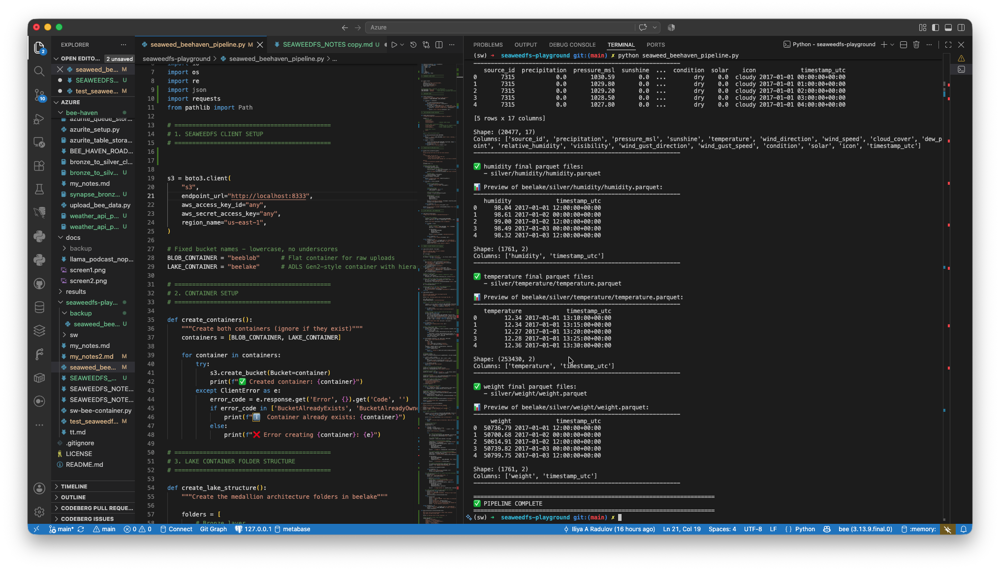

Bee Haven — SeaweedFS
The same medallion architecture as the Azure build, rebuilt on a local, open-source, S3-compatible object store — started as an unrelated tangent, grew into a genuine head-to-head comparison.
Why SeaweedFS
Chosen over Garage (AGPL-3.0, built for geo-distributed setups) and RustFS (newer, less battle-tested) for its permissive Apache 2.0 license and production track record — it's the default storage backend for Kubeflow Pipelines. Set up deliberately as a sibling folder, not nested inside the Azure project, to keep the two clearly separate at first.
Setup
Running via Docker, exposing the S3 API (port 8333), master UI, filer UI, and — once added — WebDAV for browsing the data directly in Finder. Connected with the standard boto3 S3 client; no real authentication required locally. First round-trip (create bucket, upload, list, read back) worked cleanly on the first attempt, as did a check of S3 prefix-based folder behavior (bronze/, silver/) mirroring the same flat-namespace logic seen with Azurite earlier in the project.
-v seaweedfs_data:/data — confirmed persistent afterward via a stop/start test. A legitimate hiccup, just a much cheaper one to diagnose and fix than anything on the Azure side.Architecture
Two containers, mirroring the Azure design: beeblob (flat, mirrors the raw-landing blob account) and beelake (hierarchical: bronze/new, bronze/archive, silver/processing staging, per-type final folders, gold/). Flow: local CSVs → beeblob → copied to beelake/bronze/new → cleaned (same logic as the Azure notebook: column names, UTC timestamps, missing values, flow arrival/departure split, duplicate removal) → staged in silver/processing/ → moved to per-type final folders on success, left in place for review on failure. Weather integration reuses the staged sensor files to determine the needed date range, fetches from the Bright Sky API in monthly chunks, and follows the same staging/success-move pattern.
Two real bugs found and fixed
Sort order silently redefining "arrival" and "departure"
Sorting by ["timestamp_utc", "flow"] meant rows sharing a timestamp got ordered by their flow value instead of their original file order — so "departure" quietly came to mean "whichever reading has the lower number" instead of "whichever reading appeared first." Fixed by sorting on timestamp_utc alone, relying on pandas' stable sort to preserve original order for ties.
A timezone fallback that silently dropped timezone info
The primary DST-handling path needed several consecutive repeated timestamps to resolve an ambiguous hour — fine for high-frequency flow/temperature data, but it failed for the twice-daily humidity/weight readings, falling through to an exception branch. That fallback used plain pd.to_datetime() with no timezone localization at all, silently producing naive timestamps on two of the four sensor files while the other two stayed correctly timezone-aware — a mismatch that only surfaced once the weather step tried to compute a combined date range and hit a tz-naive/tz-aware comparison error. Fixed by properly localizing in the fallback too, marking genuinely ambiguous hours as missing rather than guessing.
Result
Full pipeline run, all steps succeeding: four sensor files cleaned and moved, all four now consistently timezone-aware; weather data — 20,477 records across 29 monthly API chunks — cleaned, staged, and moved; success-branch logic correctly moving everything only once all processing actually succeeded.

Screenshot of the SeaweedFS pipeline in action.Why this worked cleanly where the Azure version didn't
Worth being honest about, since it's the actually useful takeaway: the real Azure pipeline hit a persistent authorization error even with correctly-assigned IAM roles, isolated to a specific integration seam between ADF's triggered execution context and ADLS Gen2 authentication — a widely-documented pain point, not a gap in understanding. Locally, there's no separate managed identity, no cross-service token handshake, no session-vs-trigger authentication context to diverge — just one script talking directly to storage. Fewer moving parts, fewer places for that specific class of problem to occur.
This local build isn't a replacement for the Azure work — it's proof that the underlying architecture and logic (staging, success/failure branching, archive-with-history, weather integration) are sound, demonstrated working end-to-end, even though the Azure deployment hit a platform-level limitation that stayed open.
📓 Full technical deep-dive: setup log, architecture, and both bugs with full code